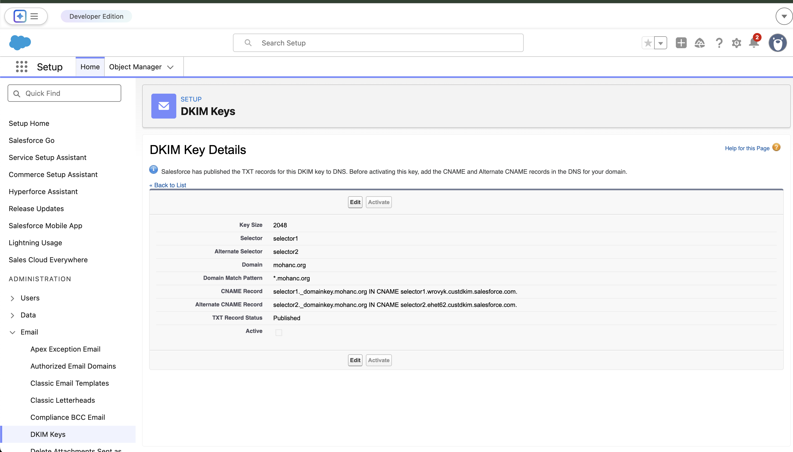

Abstract
This paper explains how DomainKeys Identified Mail (DKIM) verification works in a real-world Salesforce setup using DNS-based key delegation. It demonstrates how DNS acts as a distributed public key repository and how Salesforce simplifies DKIM management using CNAME indirection.
Salesforce DKIM Configuration

DKIM configuration in Salesforce showing selectors, domain, and CNAME records.
1. DKIM Overview
- DKIM uses public/private key cryptography
- Emails are signed by the sender using a private key
- Receivers verify using a public key published in DNS
- Ensures message integrity and domain authenticity
2. Configuration Details
Your configuration includes:
Domain: mohanc.org Selectors: selector1, selector2 selector1._domainkey.mohanc.org → selector1.wrovyk.custdkim.salesforce.com selector2._domainkey.mohanc.org → selector2.ehet62.custdkim.salesforce.com
3. Key Architectural Insight
Instead of directly publishing public keys in DNS, this configuration uses CNAME delegation. This means the domain delegates DKIM key management to Salesforce.
4. DKIM Verification Flow
Step 1: Email Signing
Salesforce signs outgoing email using its private key.
Step 2: DKIM Header
DKIM-Signature: d=mohanc.org; s=selector1;
Step 3: DNS Lookup
selector1._domainkey.mohanc.org
Step 4: CNAME Resolution
→ selector1.wrovyk.custdkim.salesforce.com
Step 5: Public Key Retrieval
v=DKIM1; k=rsa; p=PUBLIC_KEY
Step 6: Verification
The receiving server verifies the signature using the retrieved public key.
5. DKIM Verification Flow Diagram
Private Key] B --> C[Email sent over Internet] C --> D[Gmail receives email] D --> E[Extract DKIM Signature
d=mohanc.org, s=selector1] E --> F[DNS Query
selector1._domainkey.mohanc.org] F --> G[CNAME Redirect
to Salesforce] G --> H[Salesforce DNS returns
Public Key] H --> I[Gmail verifies signature] I --> J{Valid?} J -->|Yes| K[DKIM PASS ✅] J -->|No| L[DKIM FAIL ❌] style A fill:#6366f1,color:#fff style B fill:#22c55e,color:#fff style D fill:#f59e0b,color:#fff style F fill:#3b82f6,color:#fff style G fill:#8b5cf6,color:#fff style H fill:#10b981,color:#fff style K fill:#16a34a,color:#fff style L fill:#dc2626,color:#fff
Figure: End-to-end DKIM verification flow using Salesforce CNAME delegation and DNS-based public key retrieval.
5. Why Salesforce Uses CNAME
- Delegates key management to Salesforce
- Enables seamless key rotation
- Improves operational simplicity
- Supports multi-tenant architecture
6. Role of Selectors
Multiple selectors allow safe key rotation without service disruption. One selector can remain active while another is introduced or retired.
7. Activation Status
Although DNS records are published, the configuration indicates that DKIM is not yet active. Emails will not be signed until activation is completed.
8. Conclusion
DNS serves as a distributed public key infrastructure for DKIM. In this architecture, Salesforce enhances this model by introducing CNAME-based delegation, allowing organizations to maintain trust while outsourcing cryptographic operations.